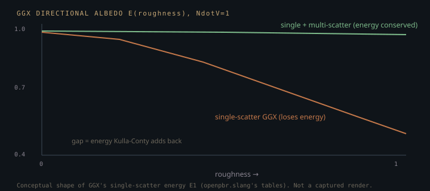

Monograph · Tree · ← Module hub · PBR metallic-roughness
materials
PBR metallic-roughness
F0, ORM convention, roughness floors.
The lie artists can paint
The physically-correct microfacet BRDF wants a spectral, complex index of refraction at every surface point. No artist authors that. OHAO collapses it to a few scalars an artist can paint into textures — base color, metallic, roughness, and OpenPBR's specular weight, colour and IOR beside them — and reconstructs the physics at shade time, once: OpenPBR's base (`material/openpbr.slang`) is the one surface model the path tracer (both RT profiles), the deferred frame, the forward transparent pass and RT GI's hits all evaluate.
F0: the 0.04 that is not arbitrary
F0 is the Fresnel reflectance at normal incidence — the fraction of light a flat surface bounces straight back when you look at it head-on. For a dielectric it is fixed by the index of refraction n through F0 = ((n - 1)/(n + 1))^2. Common dielectrics sit near n = 1.5, so:
Metals have no meaningful single-scalar IOR in this model and absorb all transmitted light within nanometers, so they get zero diffuse and reuse base color as F0. OpenPBR's base keeps the IOR instead of its F0. A material's `specular_ior` (default 1.5) gives the dielectric its exact Fresnel at every angle, and `specular_weight` scales that F0 by returning the IOR that has the scaled value; a metal's F0 is `base_weight × base_color`:
eta = clamp(modulatedIor(m.specularIor, m.specularWeight), 1.0, kPbrEtaMax);shaders/material/openpbr.slang:424metalF0 = rho;shaders/material/openpbr.slang:426The intermediate values of the metallic slider (metallic = 0.5) are not physical — no real material is half-conductor. Every renderer keeps the slider continuous anyway, because a continuous, monotonic control is all an artist needs and the pure 0/1 endpoints are exactly right; OpenPBR mixes its metal and dielectric lobes by it.
One input set, one BSDF
The path tracer, `rt/path_tracer.slang`, and the deferred lighting shader, `core/deferred_lighting.slang`, both import OpenPBR's base from `material/openpbr.slang`; each resolves its material into `MaterialInputs`, OpenPBR's names — the path tracer's closest hit from the material rows and textures, deferred lighting from the G-buffer:
struct MaterialInputsshaders/material/openpbr.slang:363mi.baseDiffuseRoughness = pbr.r;shaders/core/deferred_lighting.slang:212The base
`OpenPBRBase` is OpenPBR Surface's base layer: a metal lobe and a dielectric lobe over a diffuse one, mixed by `base_metalness`. The metal is GGX with the F82-tint Fresnel; the dielectric is GGX with the exact Fresnel of its IOR, tinted by `specular_color`, over EON diffuse (Portsmouth, Kutz and Hill 2025), which takes what the specular does not reflect toward the viewer:
diffuse = (1.0 - metalness) * (1.0 - dielectricAlbedo(wo.z, t)) * eonEval(rho, diffRough, wi, wo) * wi.z;shaders/material/openpbr.slang:477GGX is single scatter plus Kulla-Conty's multiple-scattering lobe, so a white metal and a white dielectric over a white base reflect what they receive. The lobe's directional albedos come from tables generated from the module itself (`tools/material/openpbr_tables`), compiled into `openpbr_tables.hpp` and uploaded once to binding 38:
return (1.0 - t.E1(wo.z, rough)) * (1.0 - t.E1(wi.z, rough)) / (kPbrPi * max(1.0 - e1Avg, 1e-6)) * wi.z;shaders/material/openpbr.slang:438add(38, BUFFER, RGEN); // OpenPBR's energy tables (rt/path_tracer.slang)ohao/render/rt/path_tracer_descriptors.cpp:83The base samples as well as evaluates: the specular lobe by bounded VNDF sampling, the diffuse by EON's own sampler, chosen by each lobe's share of the albedo's luminance, and the path tracer weighs light samples against that density. The GGX unit has the details.
The deferred frame's evaluation
The rasteriser cannot importance-sample per pixel, so it evaluates the base analytically, light by light, through `includes/lighting/clustered_lights.slang`. The BSDF is the path tracer's; what differs is how a light is integrated. A sphere light's specular is taken at the point of the sphere nearest the reflection with the lobe widened by its angular size, its diffuse toward its centre; a rectangle's diffuse by its exact irradiance and its specular at the representative point. `evalLobes` returns the two lobes separately for that purpose:
void evalLobes(float3 wo, float3 wi, OpenPBRTables t, out float3 specular, out float3 diffuse)shaders/material/openpbr.slang:458Single scatter models exactly one bounce off the microsurface, so rough metal comes out visibly too dark; Kulla-Conty's lobe (2017) returns the lost energy:
where E is the directional albedo of single-scatter GGX and $E_{avg}$ its cosine-weighted average, both read from the same tables the path tracer uses, and $F_{avg}$ the lobe's Fresnel average:
return favg * favg * e1Avg / (1.0 - favg * (1.0 - e1Avg));shaders/material/openpbr.slang:221Deferred lighting binds the tables at binding 20, the path tracer at 38.
// 20: OpenPBR's energy tables (SSBO)ohao/render/deferred/deferred_lighting_pass.cpp:535
The environment's specular is the split sum, the prefiltered environment times the specular lobes' own directional albedo (`specularAlbedo`, the same tables), and every indirect diffuse term is weighed by the diffuse lobe's albedo beneath the specular (`diffuseAlbedo`), so a metal takes no diffuse fill at all.
Where the renderers still differ
The deferred frame and the path tracer evaluate one model, so a material's look does not depend on which of them renders it. What separates them is transport: one GI bounce against many, the split-sum environment, representative points for sphere and rectangle specular. `check_parity.py` measures that distance; it is not a material difference.
One geometry term
There is one masking-shadowing treatment in the shaders: height-correlated Smith from the Λ function in `ggxSingle`, used by the path tracer's light samples and bounces, the deferred frame's lights and, through the tables generated from it, the split sum's weight. It needs no roughness remap; no Smith-Schlick `k` appears anywhere in the tree.
const float G2 = 1.0 / (1.0 + ggxLambda(wo.z, a2) + ggxLambda(wi.z, a2));shaders/material/openpbr.slang:133The path tracer's closest hit carries each OpenPBR input as its own payload field; there is no packed material vector to decode.
Contracts
- A dielectric's reflectance comes from `specular_ior` and `specular_weight`, a metal's from base colour; no renderer forms a fixed F0 of 0.04. The G-buffer carries those inputs (`kSpecular`, `kOpenPBR`) so deferred lighting rebuilds the same `MaterialInputs` the path tracer resolves.
- Roughness is floored once, at 0.01 (`kMinSpecularRoughness`), in the module; the G-buffer and the closest hit pass it as authored.
- The path tracer and the deferred frame are energy-compensated from the same tables (bindings 38 and 20); regenerate them from the module after any change to it.
- The base samples by bounded VNDF for its specular lobe and EON's sampler for its diffuse, and the density MIS weighs against is that mixture.
Source files
shaders/material/openpbr.slangshaders/core/deferred_lighting.slangohao/render/rt/path_tracer_descriptors.cppohao/render/deferred/deferred_lighting_pass.cppohao/render/scene/material_table.hppParent hub for the full pipeline narrative; this page is the file-level design unit. Sitemap · hover glossary terms anywhere.